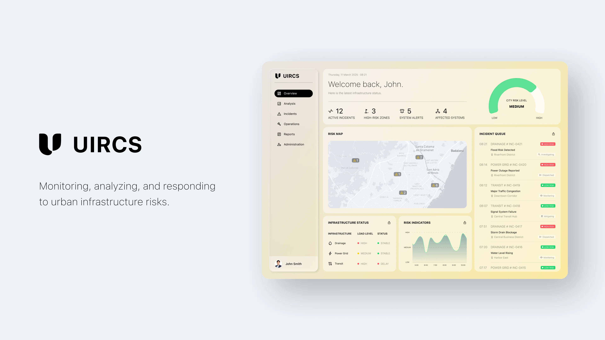
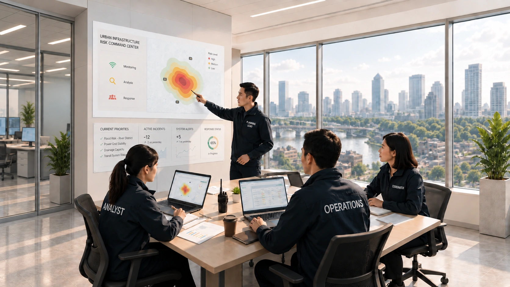
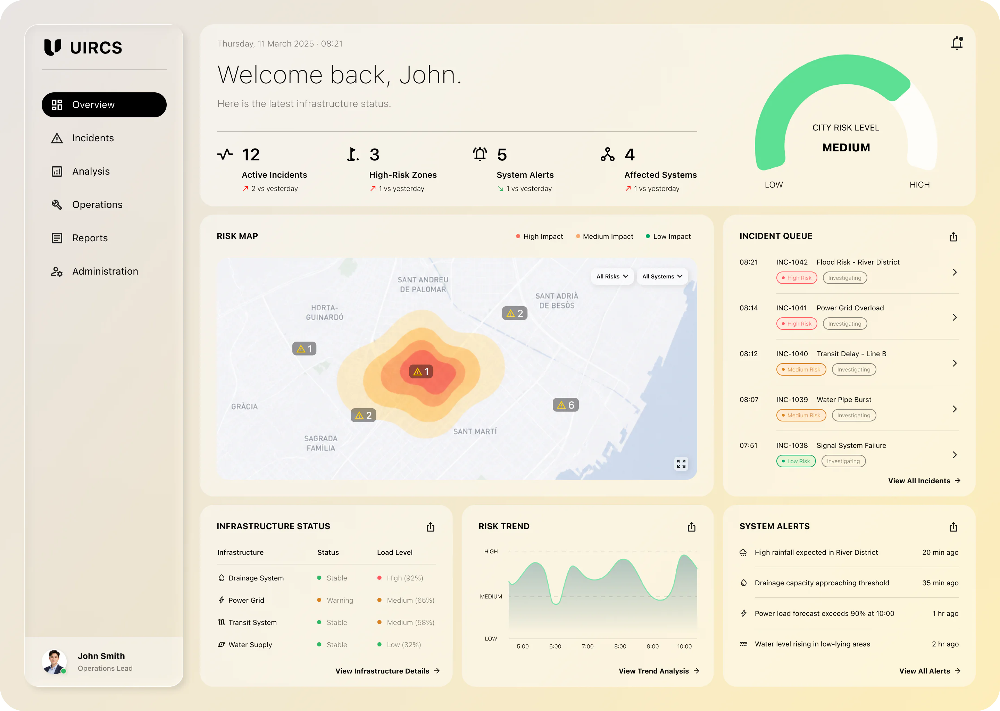
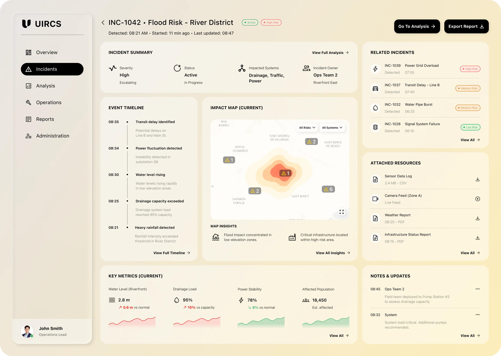
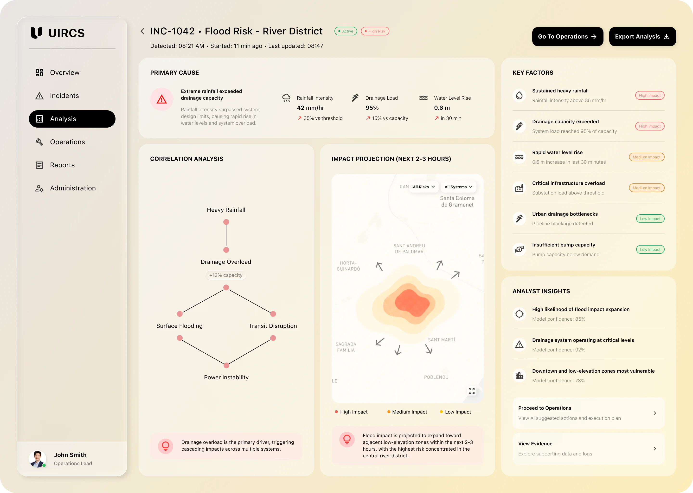
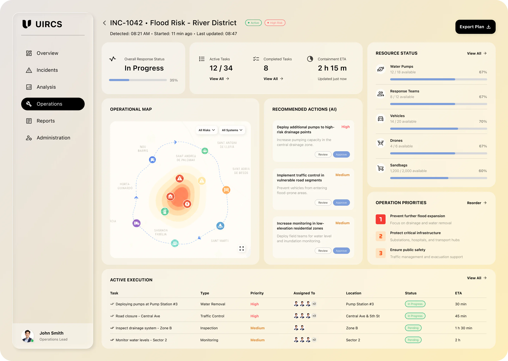
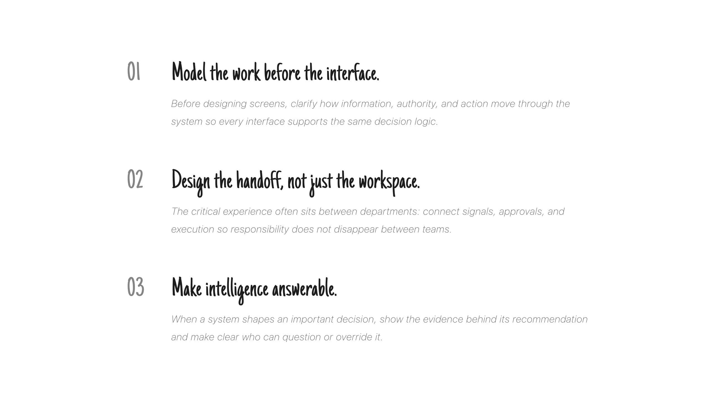

B2B PRODUCT DESIGN · 2025
UIRCS
UIRCS is an enterprise operational platform that coordinates infrastructure risk across municipal departments. It connects predictive signals, decision authority, and execution pathways into one shared operational lifecycle.
- Role
- Product & Systems Designer
- Scope
- 0→1 Enterprise System
- Team
- Product, engineering, operations, and municipal stakeholders
Problem
Risk was fragmented across departments.
Drainage, power, and transportation teams each monitored their own signals, while decision authority sat across multiple layers of the organization. Teams could detect problems, but lacked a shared view of risk and a clear path to coordinate the next action.

System Context
Risk signals were fragmented.
Drainage, power, and transportation teams each maintained dedicated monitoring systems, while risk intelligence remained isolated across organizational boundaries. Decision authority was distributed across operational departments, a coordination layer, and executive leadership, so the challenge was aligning intelligence with the people authorized to act.
Operational Gap
Signals stalled before action.
Under high-risk conditions, detection, authorization, and execution operated as disconnected phases. Manual consolidation and sequential approvals introduced latency when infrastructure dependencies made speed and coordination most important.
System Strategy
Unify the risk lifecycle.
We shifted infrastructure management from isolated monitoring toward anticipatory coordination. UIRCS embeds predictive intelligence in a governed lifecycle connecting detection, investigation, authorization, intervention, and audit.
Strategy 01
Make risk legible.
Show the signal, evidence, and downstream impact together.
Strategy 02
Connect decision rights.
Make investigation and authorization visible across departments.
Strategy 03
Keep action accountable.
Carry intervention, traceability, and audit in one model.
System Architecture
Model decisions before screens.
I modeled the relationships between risk signals, cascade exposure, decision rights, and execution pathways before composing independent features. Four role-aligned layers—Command, Investigation, Operations, and Executive—support distinct responsibilities while preserving one source of operational truth.
Information Architecture
Organize around decisions.
Navigation follows the risk lifecycle rather than departmental ownership. Role-based access controls visibility, action privileges, and information density, so teams can coordinate through a shared model without losing responsibility boundaries.
Interface Design
Design for each role.
Each workspace is calibrated to a different decision context: maintaining situational awareness, investigating evidence, coordinating interventions, or reviewing strategic exposure. Together, the interfaces turn system architecture into actionable work.




Impact
Progress showed up in coordination.
UIRCS addressed the original gap by giving teams a shared path from detection to action: signals could be connected across departments, ownership could be assigned earlier, and response work could move forward without repeated manual handoffs.
Reflection
Beyond the product.
UIRCS reinforced that enterprise design starts with the operating model: clarify who owns a decision, what evidence supports it, and how automation remains accountable.
